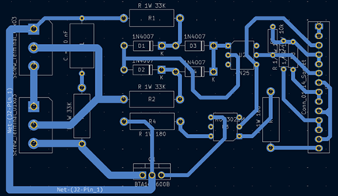

Projeto Integrador – Whipped Beer
Introdução
Semestralmente, os alunos do Centro Universitário Senac, dos cursos de Engenharia da Computação e Engenharia de Produção, recebem o desafio de desenvolver um Projeto Integrador. O objetivo é estimular o trabalho em equipe e aplicar os conhecimentos das disciplinas do período em um projeto prático, que conecte o conteúdo acadêmico à realidade do mundo profissional.
No 3º semestre, foi proposto o desenvolvimento de uma solução para auxiliar o processo de produção de cerveja artesanal. A proposta consistia na criação de um sistema eletrônico capaz de monitorar e controlar automaticamente a temperatura, respeitando a rampa térmica exigida durante a fabricação da cerveja. Em resumo: o circuito deveria acionar e desligar uma carga (um fogão elétrico, por exemplo) de acordo com a temperatura lida em tempo real, mantendo os processos térmicos dentro dos parâmetros ideais.
Fabricação de Cerveja Artesanal
Após a apresentação do projeto, tivemos uma introdução prática e teórica sobre a fabricação de cerveja artesanal, ministrada pela mestre-cervejeira Danielle dos Santos Mingatos, sócia da Cia de Brassagem Brasil. Durante sua palestra, ela nos explicou os principais processos envolvidos na produção, os ingredientes utilizados e os cuidados técnicos necessários. Ao final, os alunos puderam votar no estilo de cerveja a ser produzido, e a escolha majoritária foi a Belgian Blond Ale.
Fundamentos Técnicos
Durante as aulas da disciplina Ciência e Tecnologia Aplicada I, recebemos orientações técnicas sobre eletrônica aplicada, controle de potência e automação. Os professores Dr. Wagner Ludescher e Adriano Camargo de Luca apresentaram os fundamentos para controlar eletronicamente uma carga resistiva, utilizando sensores, optoacopladores e microcontroladores.
Foi proposto o desenvolvimento de uma placa de circuito impresso (PCB) baseada em:
- Um optoacoplador 4N25, para detecção dos pulsos de zero-crossing da tensão alternada;
- Um MOC3021, para acionamento de um TRIAC BTA16-600B, responsável por controlar a entrega de potência à carga;
- Um sensor de temperatura DS18B20, posicionado dentro da panela;
- E um Arduino (ou equivalente ESP8266), encarregado de realizar as leituras e o controle do sistema de aquecimento.
O microcontrolador decidia o acionamento da carga (fogão elétrico) com base na leitura de temperatura realizada pelo sensor.

Placa PCB desenvolvida pelo Professor Wagner Ludescher
Desenvolvimento Web e Aplicações na Nuvem
Simultaneamente, o professor Rafael Pereira nos introduziu às tecnologias web: HTML, CSS, JavaScript e também ao conceito de hospedagem em nuvem. A proposta era desenvolver um website que apresentasse o projeto de forma profissional e interativa, com acesso público e uma seção privada de dashboard, onde as leituras de temperatura pudessem ser monitoradas em tempo real.
Nova Solução Proposta: Acionamento via Relé
Conforme nos aproximávamos da brassagem real, uma segunda alternativa de placa foi proposta, com menor complexidade de implementação: uma placa com acionamento da carga por relé. Essa versão, mais simples que o controle via TRIAC, realizava o ligamento e desligamento do fogão elétrico com base na leitura da temperatura, conforme o líquido se aproximasse da temperatura alvo de cada etapa.
Receita da Cerveja – Belgian Blond Ale
- OG: 1,067 | FG: 1,016 | ABV: 6,5% | IBU: 15 | EBC: 14
Maltes e Adjuntos:
- Malte Pilsen – 0,65 kg
- Malte Cara Pils – 0,07 kg
- Malte Melanoidina – 0,05 kg
- Flocos de Aveia – 0,05 kg
- Açúcar de Cana – 0,075 kg
- Casca de Laranja Bahia – 3 g
- Semente de Coentro – 2 g
Lúpulo: Tettnang – 8 g
Fermento: SafAle S33 – 2,5 g
Água Total: 5,7 L (inicial + sparge)
Rampas de Mostura:
- 42°C por 10 min
- 50°C por 10 min
- 66°C por 60 min
- 78°C por 10 min
Fervura: 60 min com adições conforme cronograma
Coleta de Dados e Automação
Durante o processo de brassagem, realizamos a coleta de dados (temperatura x horário) conforme instruído. No nosso caso, utilizamos um ESP8266 como microcontrolador, o qual foi programado para disponibilizar uma página HTML local que permitia acompanhar as leituras do sensor de temperatura em tempo real.
Além disso, desenvolvemos um servidor com rotas de backend em Java, que recebia requisições POST autenticadas contendo os dados coletados pelo ESP. Esses dados eram então armazenados em um banco de dados MySQL, formando o histórico completo do processo térmico da brassagem.
Ao final da brassagem, resfriamos o mosto até 20°C e o transferimos para o fermentador com airlock, onde permaneceu por 20 dias para fermentação.
Apresentação Final
Após a fermentação e o envase, apresentamos a cerveja produzida e todo o projeto durante a Semana das Engenharias, evento tradicional do Senac que reúne os trabalhos desenvolvidos por todos os semestres dos cursos de Engenharia.
Sobre o Grupo – Whipped Beer
Nosso grupo foi formado por João Henrique Teixeira Ferreira, Gustavo Germiniani, Gabriel da Silva Martins, Diego Ragozini Silva, Luan Fontão Ongaratto e Daniel Fincati Farath. Batizamos nosso projeto de Whipped Beer.
Optamos por desenvolver a versão do circuito com acionamento por relé, por sua simplicidade e confiabilidade no controle on/off da carga.
Estrutura Eletrônica
Optamos por desenvolver a versão do circuito com acionamento por relé, por sua simplicidade e confiabilidade no controle on/off da carga.
Placa PCB desenvolvida pelo Professor Wagner Ludescher
Tecnologias Utilizadas
Software:
- Arduino IDE – programação do ESP8266
- Frontend – HTML, CSS, JavaScript (público + dashboard)
- Backend – Java (Spring Boot), gerenciamento de rotas e geração de gráficos
Microcontrolador:
- Utilizamos o ESP8266, programado para ler a temperatura via sensor DS18B20, alocado dentro da panela e protegido por tubo de cobre. A leitura era exibida em uma interface web local hospedada pelo próprio ESP. Também era possível definir o setpoint e acionar o relé automaticamente conforme o líquido se aproximava da temperatura desejada.
Integração com Servidor:
- As leituras eram enviadas via POST para nosso servidor, gerenciado com NGINX, e armazenadas no banco de dados MySQL.
- Desenvolvemos um sistema de autenticação via tokens para acesso às rotas privadas do dashboard.
- Toda a comunicação foi protegida com criptografia SSL utilizando Certbot.
Website:
Nosso website é dividido em:
- Páginas públicas: apresentando o projeto, equipe e etapas da produção.
- Dashboard privado: exibição de gráficos e dados em tempo real, acessado apenas com login e senha.